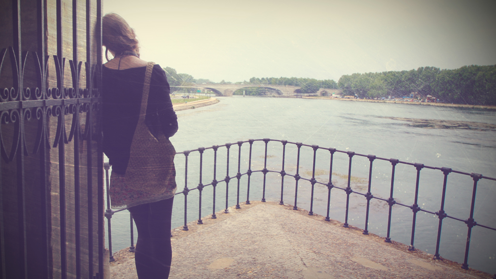
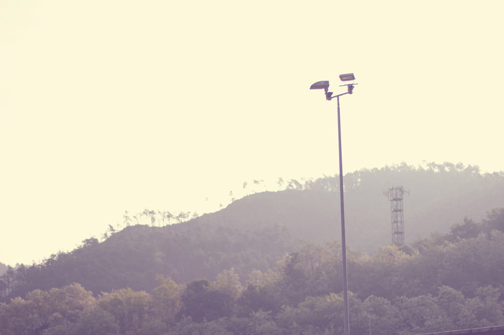
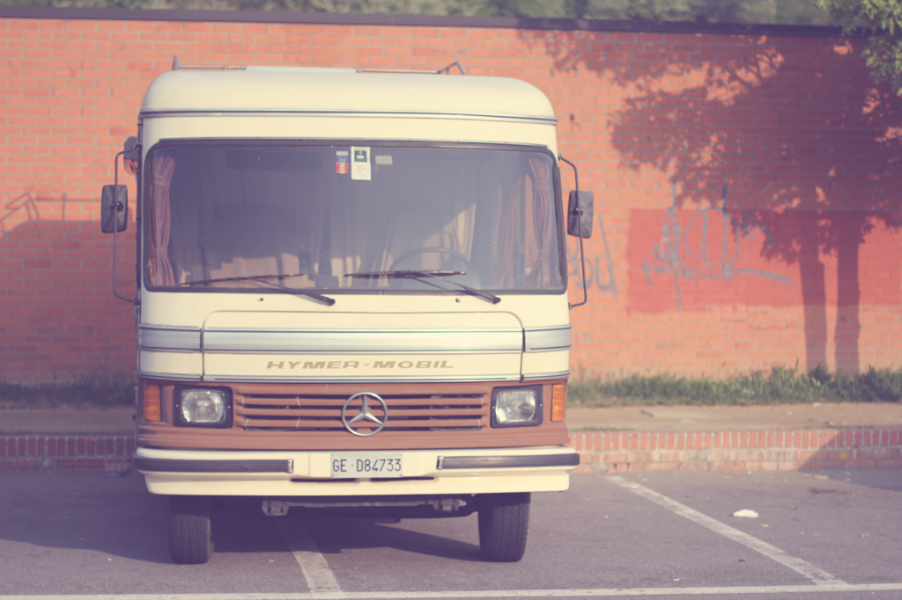
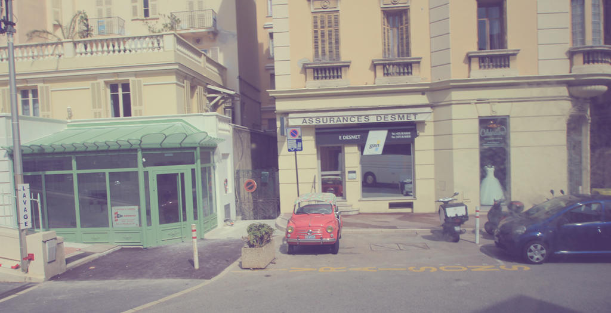
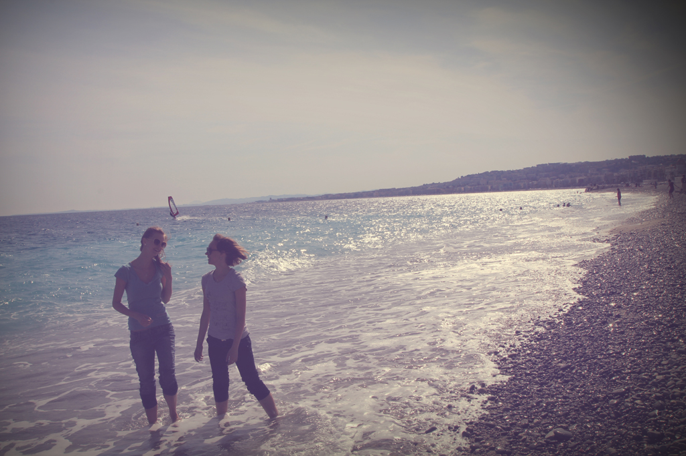
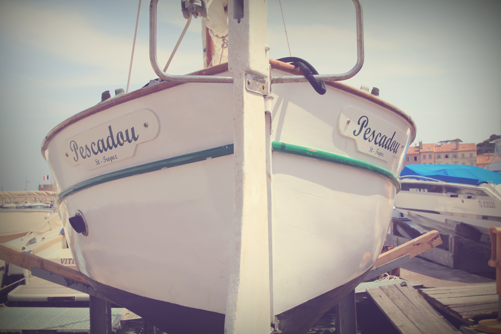
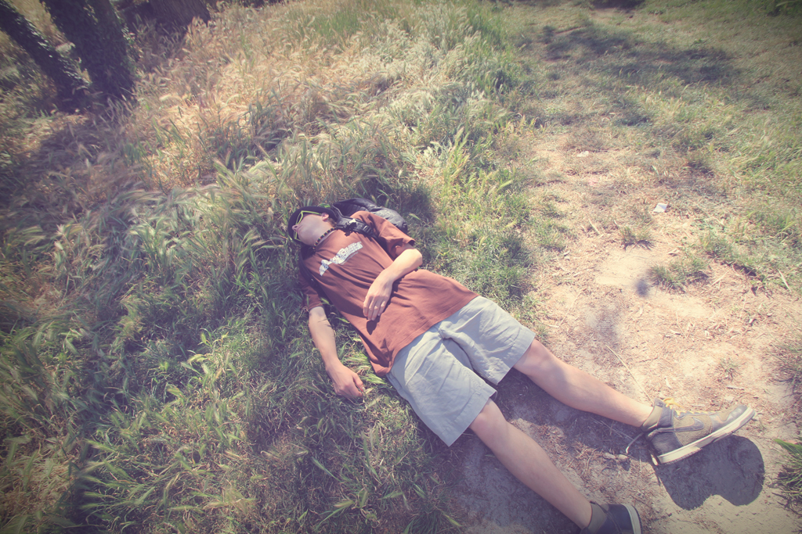
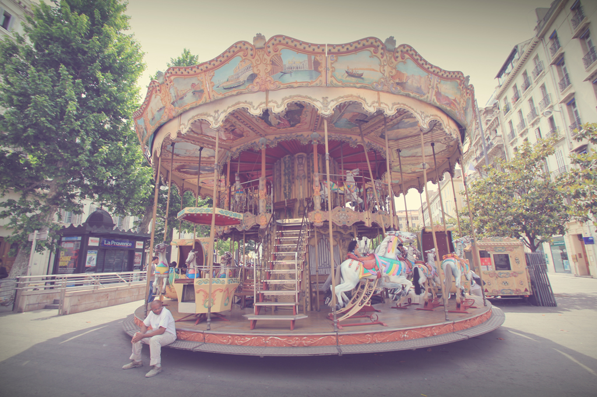

FRANCIE
Káťa

Magické hory

Hippie dodávka

Francouzské auto

Holky u moře

Loď v Saint-Tropez

Odpočinek v poli

Francouzský kolotoč

TITULKY
Fotograf: Martin Jenč
PŘED OBJEKTIVEM
Káťa Elznicová
Markéta Carvanová
Štěpule Drozdová
Matyáš Kučera
Jakub Týče
ANOTACE
Stejně tak jako video This Is France, tak i tyto fotky patří k počátku mojí tvorby. Fotky vzniky v průbehu čtrnáctidenního výletu ve Francii,
kde jsme byli s několika kamarády v květnu roku 2011. Většinou jsem fotil vše, co mi přišlo před objektiv a tak mi dalo poměrně práci vytřídit
osm nejlepších fotek z celkových tří tisíc.
© 2013 MARTIN JENČ All Rights Reserved